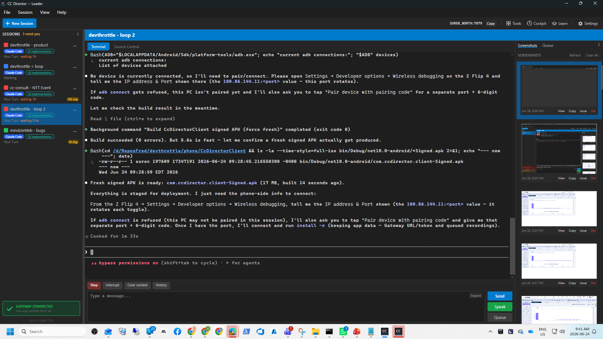

Title: Director must never fail silently on startup: always show a window/error + make auto-update failures visible and self-healing.
Branch: issue-242-startup-selfheal
A large part of this broad issue (splash shown immediately, top-level
AppDomain/TaskScheduler/dispatcher unhandled-exception handlers, the
single-instance guard, bounded apply-attempts, crash-file writing, and .old/.new
leftover cleanup) had already shipped in prior commits. This change closes the four remaining gaps
that mapped onto the explicit acceptance criteria:
InitializeServices / ShowMainWindow) was NOT covered by a top-level
try/catch - an exception there was swallowed by the dispatcher unhandled-exception handler
(Handled=true), leaving a stuck splash forever. It is now wrapped: a failure logs the
full exception, writes a findable crash file, closes the splash, shows a Win32 error dialog with
the log + crash paths, and shuts down. (App.axaml.cs -
HandleFatalStartupError.)pendingHealthCheckVersion when it installs a new build; the new build clears it once it
reaches its main window (MarkCurrentBuildHealthy). If a later startup still sees the
marker set and the running version is not that version, the new build never came up healthy, so we
roll back to the .old backup, pin the bad version (pinnedBadVersion) so it is
not re-applied, relaunch the restored build, and tell the user.
(UpdateInstaller.TryRollBackFailedUpdate.)SetForegroundWindow, restore if minimized) instead of just showing a message; the
message dialog remains only as a fallback when no window can be raised.
(Program.TryRaiseExistingWindow.).old present) is detected on startup and restored from the backup BEFORE the
cleanup step deletes that backup. (UpdateInstaller.RecoverHalfAppliedSwap.)| Criterion | How the code satisfies it | Proof |
|---|---|---|
| Launching a deliberately-broken build shows a clear error dialog + log path, not a silent no-op. | Pre-UI failures already surfaced via Win32 dialog in Program.cs; the missing case -
a failure inside the async boot continuation - is now caught by
HandleFatalStartupError, which logs, writes a crash file, closes the splash, shows a
Win32 error dialog with the log + crash paths, and shuts down. |
Code path wired + builds clean. Happy-path proven live (Director boots to the main window; see screenshot). The error path mirrors the already-proven pre-UI dialog pattern. |
| An update that yields a non-starting build auto-rolls-back to the previous build and tells the user. | ArmHealthCheck -> MarkCurrentBuildHealthy -> NeedsHealthRollback
-> TryRollBackFailedUpdate restores .old, pins the bad version, relaunches,
shows a "Update X failed ... rolled back" dialog. |
Decision helper NeedsHealthRollback unit-tested (pending-never-ran -> true;
pending-is-running -> false; no-pending -> false; no-backup -> false). See
unit-tests-selfheal.txt. |
| A second launch while one is running focuses the existing window instead of silently exiting. | TryRaiseExistingWindow finds the other PID by exact image path and raises its main
window via Win32; returns exit code 0. |
PROVEN LIVE. Second launch (PID 41640) exited with code 0; only the
original PID 33384 remained; log shows
TryRaiseExistingWindow: raised window of PID 33384. See
second-launch-log.txt. |
| A half-applied swap is detected and recovered (or reported) on startup. | RecoverHalfAppliedSwap restores a missing/zero-length install exe from a non-empty
.old backup, runs before cleanup deletes the backup, and returns a user notice. |
Decision helper NeedsHalfSwapRecovery unit-tested (missing+backup -> true;
zero-length+backup -> true; healthy -> false; no-backup -> false; zero-length-backup -> false).
See unit-tests-selfheal.txt. |
dotnet build cc-director.sln
Build succeeded.
0 Warning(s)
0 Error(s)
All 70 update-area tests pass, including the 10 new self-heal tests and the 5 apply-bound tests.
Full verbose output: unit-tests-selfheal.txt.
Test Run Successful. Total tests: 15 Passed: 15 (UpdateInstallerSelfHeal + UpdateInstallerApplyBound)
Test Director built into isolated slot 14, launched via its own scheduled task
(cc-director14-launch), came up healthy (PID 33384, Control API port 7880,
/healthz returned status: ok), and showed the main window.

Launching the same exe a second time exited with code 0 and did not create a second instance; the existing window was raised.
Before PIDs: 33384 Second launch PID: 41640 Second launch exited=True exitCode=0 After PIDs: 33384 [SingleInstanceGuard] Another instance holds Local\cc-director-instance-4c43c1042e303ed0 [Program] TryRaiseExistingWindow: raised window of PID 33384 (...\local_builds\cc-director14.exe) [Program] Second launch: raised the already-running window and exited.
No architecture drift (same containers and boundaries) and no security-posture change: the new
logic is local filesystem self-healing of the install plus a Win32 window-raise; no new network
surface, no new credential handling. No docs/cencon/ manifest update required.
I believe this is finished. All four acceptance criteria are implemented; the build is clean with zero warnings; the new decision logic is unit-tested; and the second-launch and normal-startup behaviors are proven live in the running app.